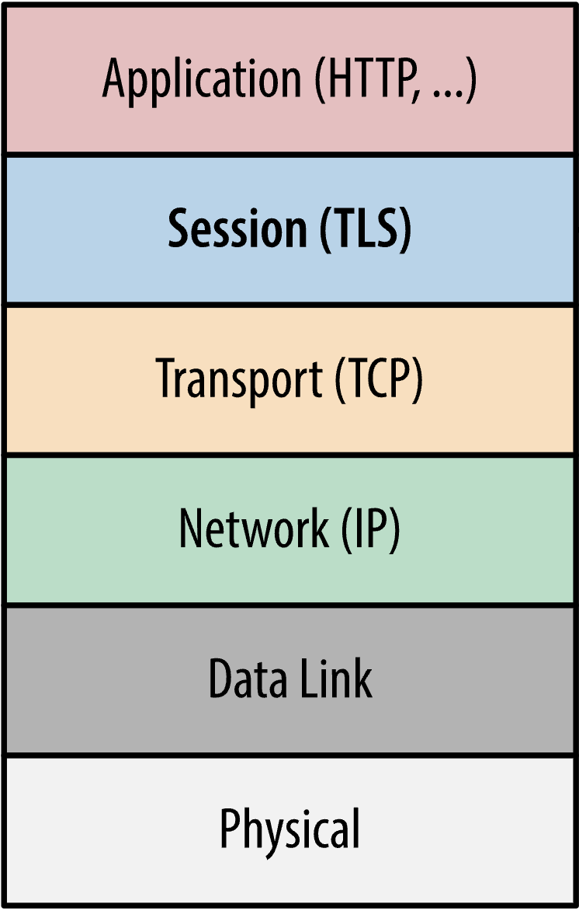
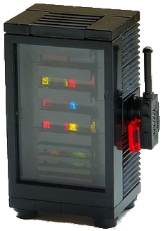
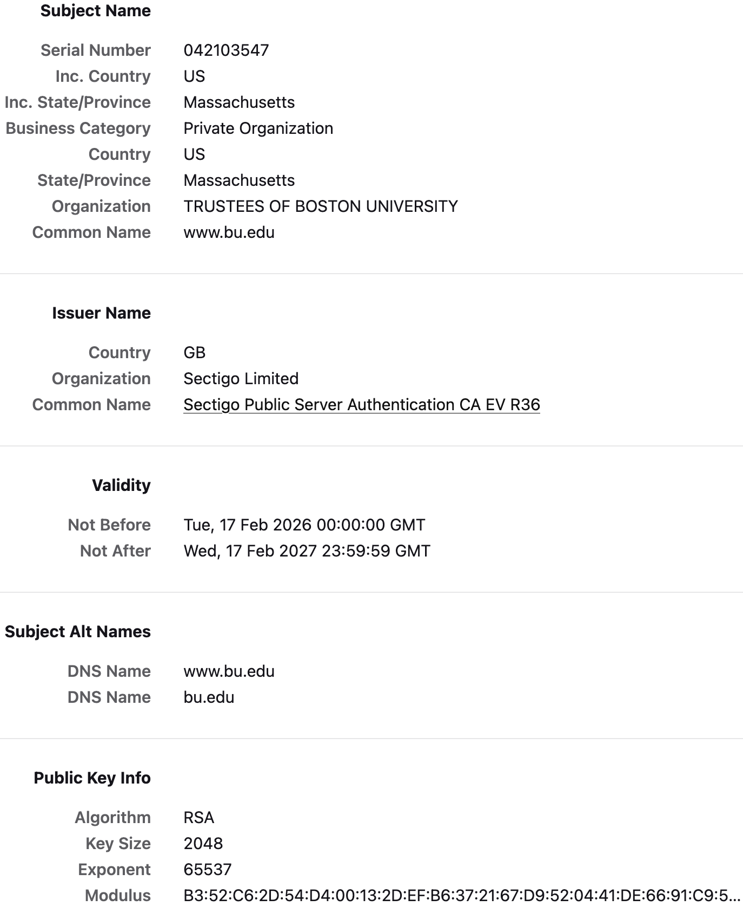
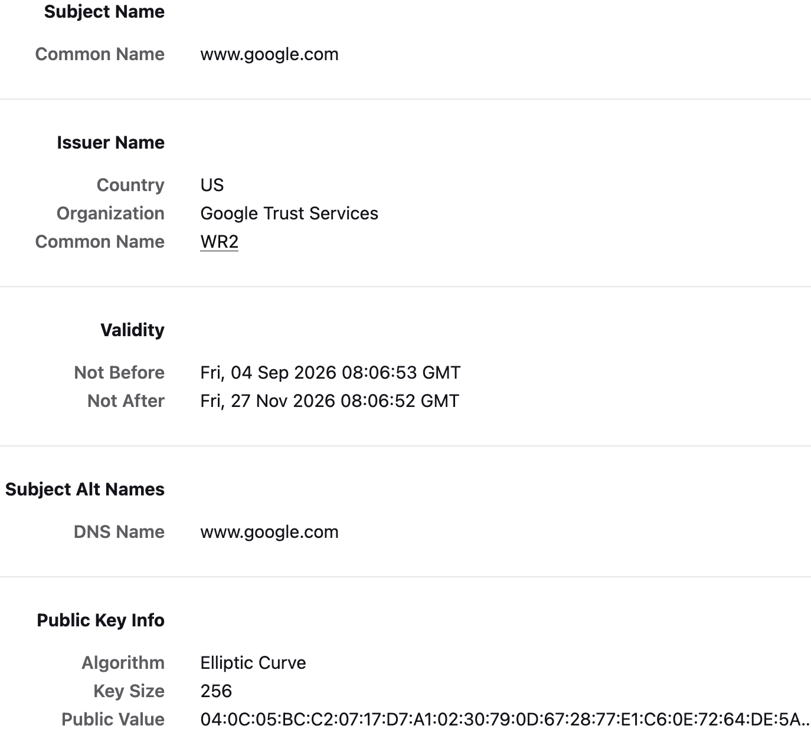
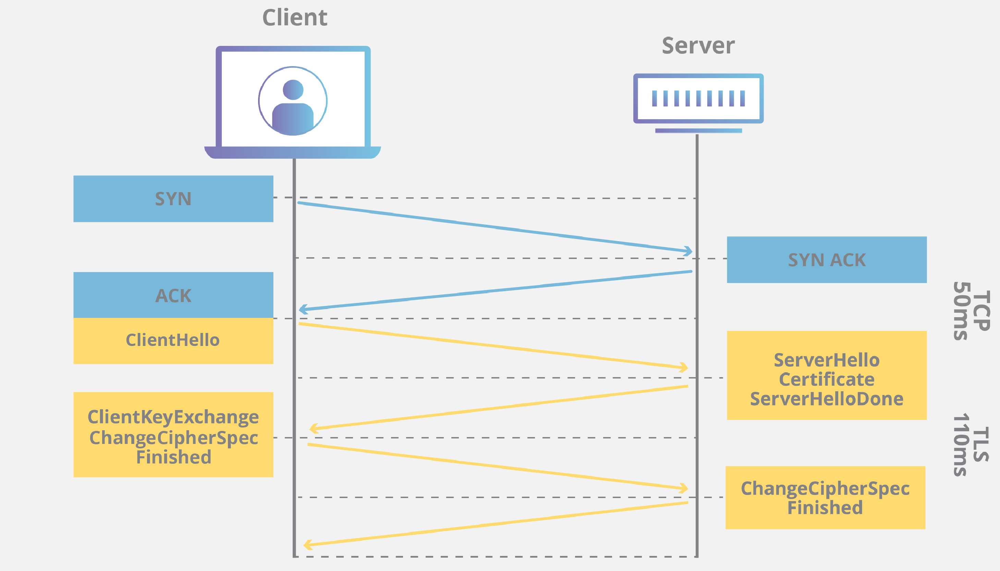
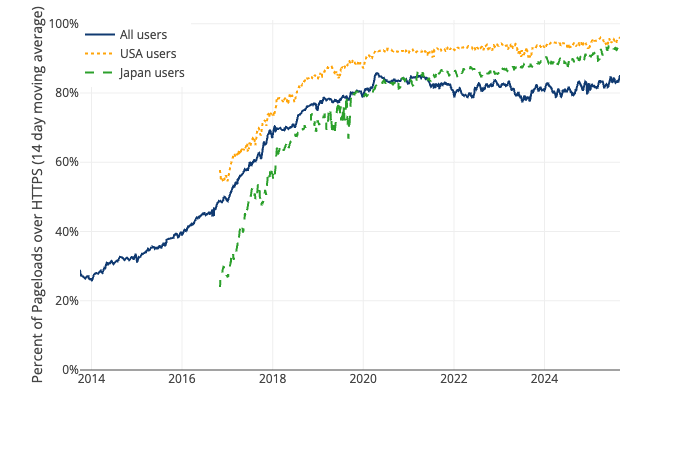
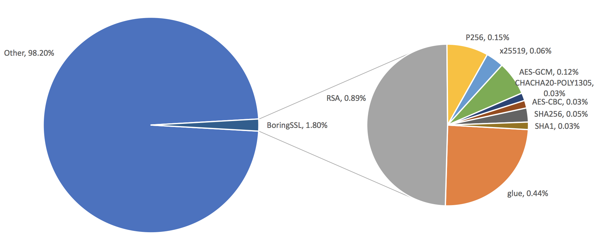

17 Transport layer security
Announcements
- Please pick up your card
- Wed 11/11 at 8pm: Homework 7 due
- Fri 11/13: Lab 11 on this week’s reading (EKR sections 1.2–1.3 and NBFMG section 4.3)
- Mon 11/16: Exam 3 (today is the final lecture in scope for Exam 3)
- Fri 11/20 at 10pm: Exam 2 retries due
- Mon 11/23 at 8pm: Homework 8 due
Learning outcomes
By the end of today’s lecture, you will learn:
- How we protect messages in transit on the Internet in applications like web browsing and fetching emails
- Why digital certificates are designed to expire and to be revocable
Review from last lecture
The goal of Unit 3 of this course is to study encryption and its role in:
- Protecting data at rest on your laptop or phone (Lecture 15)
- Protecting data in transit over the Internet or messaging app (last time + today)
Deniable crypto has two seemingly-contradictory requirements:
- Today, Alice can send a message to Bob, with confidentiality and integrity
- Tomorrow, if Mallory coerces Alice to reveal the message, then Alice can pretend she said something else
We say that a cryptosystem satisfies:
- Forward secrecy, also known as pre-compromise secrecy, if the messages sent today are safe even if one’s device is compromised at a later time
- Backward secrecy, also known as post-recovery secrecy, if the messages sent today are safe even if one’s device was compromised at a prior time

To achieve these goals, the Signal messaging protocol is intentionally designed only to use:
- Diffie-Hellman key exchange and symmetric authenticated encryption with short-term keys
- A long-term public/secret key pair only once, in order to derive the very first key at the start of the conversation
Encryption between people on the Internet is often performed in one of two ways.
| Client-server encryption | End-to-end encryption |
|---|---|
| Alice encrypts her message with the tech company’s key (and hence, they can read it). | Alice encrypts her message directly to Bob. While the message passes through the server, the tech company cannot read it. |
17.1 TLS overview
Today, we will study discuss encryption in transit in a different scenario: client-server encryption between your computer and websites on the Internet.
The Transport Layer Security protocol, or TLS, is the most popular way to provide client-server encryption on the Internet.
- Higher-level applications like your web brower and email client can use TLS to protect data in transit
- TLS is built on top of the existing (insecure) low-level Internet infrastructure for “passing notes in a classroom,” like the TCP/IP networking protocol
TLS was initially designed in the 1990s. The two versions still used in practice today are:
- TLS 1.2, standardized in 2008
- TLS 1.3, standardized in 2018

Let’s discuss the setting and objectives of TLS.
- Alice does not need any long-term cryptographic keys
- The website
example.comhas a long-term public/secret key pair for a digital signature scheme - There is a PKI to allow Alice to retrieve and check the website’s digital certificate
- The parties want to communicate with server authenticity, message confidentiality, and message integrity
- When possible, we also want deniability, forward secrecy, and backward secrecy
| Alice | Mallory | example.com | ||
|---|---|---|---|---|

|
\(\quad \Longleftrightarrow \quad\) |

|
\(\quad \Longleftrightarrow \quad\) |
 |
17.2 Digital certificates
Remember that a digital certificate is the only way for Alice to know with confidence that she is talking to example.com. As a result, the public key infrastructure (PKI) is the lynchpin of security on the public Internet.
We have seen digital certificates before.


Interactive question. Digital certificates have an expiration date. Why is that?
- To improve deniability
- To improve forward (pre-compromise) secrecy
- To improve backward (post-recovery) secrecy
Answer. Certificate expiration improves backward secrecy. If Mallory secretly steals the secret key for the server example.com, then eventually it will expire and example.com will generate a new key that Mallory does not know.
Certificate expiration also helps to deal with Moore’s law: keys need to become longer over time, so very old keys might be broken now.
Certificate revocation
What if example.com actually realizes that it has lost control of its secret key? The PKI also provides methods for certificate revocation.
- Essentially, revocation allows the server to force the certificate to expire sooner than originally intended
- The server-side process for revocation is simple: it digitally signs a message to the certificate authority (CA) requesting revocation
Question. How would you build a system for Alice to learn whether the digital certificate for example.com has been revoked?
Here are three options that are used on the web.
Certificate revocation list (CRL): the certificate authority publishes a list of all certificates that are revoked but unexpired (the certificate itself contains a link to the CRL)
Online certificate status protocol (OCSP): the certificate authority runs a web server, and Alice can ask it “has this key for
example.combeen revoked?”OCSP stapling: the
example.comserver itself receives signed statement from the certificate authority that its own certificate is still not revoked, and sends this to Alice in the handshake
The website badssl.com contains many examples of expired, revoked, and otherwise bad certificates.
17.3 Meddler-in-the-middle
An important threat to consider is a meddler-in-the-middle attack (MitM) in which Mallory injects herself in between the client and server.
Example. Alice wants to be convinced that she is talking to the real web server example.com. Here is an idea: let’s allow each client to challenge example.com to digitally sign a random message \(m\) of their choosing.
| Alice | example.com | |
|---|---|---|
|
|
\(\quad \underset{\operatorname{Sign}_{sk}(m)}{\overset{m}{\rightleftharpoons}} \quad\) |
Unfortunately, this idea does not work because Mallory can inject herself in the middle of this conversation and play both sides off against each other.
| Alice | Mallory | example.com | ||
|---|---|---|---|---|
|
|
\(\quad \underset{\operatorname{Sign}_{sk}(m)}{\overset{m}{\rightleftharpoons}} \quad\) |
|
\(\quad \underset{\operatorname{Sign}_{sk}(m)}{\overset{m}{\rightleftharpoons}} \quad\) |
An aside: Apple iMessage
As a brief aside from our discussion of TLS: let me say a word about Apple’s iMessage.
- iMessage debuted in 2011 and is perhaps the oldest end-to-end encrypted messenger in widespread use
- The Signal protocol (then called TextSecure) was released in early 2014 and incorporated into WhatsApp starting in late 2014
Signal and iMessage differ in their use of digital signatures.
- Recall from last time that Signal is designed never to use digital signatures, only authenticated encryption with Encrypt-then-MAC
- But remember that some public key cryptography is needed to know who you are communicating with
- So, Apple decided to use symmetric-key encryption and public-key digital signatures in iMessage
| Alice | Bob | |
|---|---|---|
|
|
\(\quad \underset{\operatorname{Sign}_{{sk}_A}(c)}{\overset{c = \operatorname{Enc}_{k_{AB}}(m)}{\longrightarrow}} \quad\) |

|
Question. Is Enc-then-Sign safe and secure to use? (Ignore deniability for now.)
Answer. Surprisingly, no! A research paper in 2016 showed that it breaks Apple’s iMessage. (Apple has since fixed this bug.)
What is the issue here?
- In the symmetric case, we learned that Enc-then-MAC is the best option
- It ensures that Bob only uses his decryption key after he is convinced that the message comes from Alice
- A digital signature guarantees that Alice is the sender, but not that the message was created for him
| Alice | Mallory | Bob | ||
|---|---|---|---|---|
|
|
\(\quad \underset{\operatorname{Sign}_{{sk}_A}(c)}{\overset{c = \operatorname{Enc}_{k_{AB}}(m)}{\longrightarrow}} \quad\) |
|
\(\quad \underset{\operatorname{Sign}_{{sk}_A}(c)}{\overset{c}{\longrightarrow}} \quad\) |
|
In Enc-then-Sign, when Bob decrypts the ciphertext \(c\), will it return a well-formed message?
- Sometimes yes, but also sometimes it is not well-formed and Bob sends an error message to Mallory
- This distinction is enough for Mallory to find Alice and Bob’s symmetric key \(k_{AB}\)
“We outline a novel chosen ciphertext attack… which allows retrospective decryption of some iMessage payloads in less than \(2^{18}\) queries. The practical implication of these attacks is that any party who gains access to iMessage ciphertexts may potentially decrypt them remotely and after the fact.”
– Dancing on the Lip of the Volcano: Chosen Ciphertext Attacks on Apple iMessage (Garman et al. 2016)
This is the power of meddler-in-the-middle attacks!
17.4 TLS handshake
Returning back to our topic for today, remember that TLS runs between a client Alice (with no cryptographic secrets) and a website example.com (with signature public key in the PKI). The TLS protocol runs in a few stages.
- Handshake: the parties select crypto ciphers and keys to use
- Session: the parties use
AuthEncto send and receive data - Session resumption: the parties resume a previous TLS connection without needing a new handshake
As the name suggests, a TLS handshake is the first thing Alice and the server do when they meet each other. The first few messages are, appropriately enough, called ClientHello and ServerHello.

Recall a comment I made in Lecture 1: we use crypto in transit all the time, so it must be automatic and fast. If the crypto is cumbersome or slow to use, then people will ignore it and move to other, less secure options.


Let me make two additional observations from the Cloudflare picture on the right-hand side.
- Public key cryptography is significantly slower than symmetric key cryptography, so we should use the latter as much as possible
- Why is a single server running so many different cryptographic algorithms?
Selecting crypto algorithms
Unlike the Signal/WhatsApp encrypted messengers that we discussed last time, on the Internet every web browser or email application might support different types of cryptography.
- Some web browsers might be outdated and not have the code for the newest ciphers
- Some people may configure their web browser to prefer one cryptosystem over another
For this reason:
- TLS supports several cryptographic algorithms for key exchange, symmetric encryption, digital signatures, and MACs
- One improvement made in the newest TLS 1.3 standard is to reduce the number of possible options, for simplicity and to remove broken crypto
Within a TLS handshake:
- The client Alice sends in the
ClientHellomessage a list of all cryptography that her computer can support - The server
example.comsends in theServerHellomessage its preferred choice among the crypto that Alice supports
Note that these Hello messages do not yet have confidentiality or integrity, because the parties have not yet agreed on what crypto to use!
Authenticated key exchange
The TLS handshake also allows Alice and the server to agree on the symmetric key to use for the ensuing session. There are two ways that they can do so:
- Use Diffie-Hellman key exchange, i.e., send \(g^a\) and \(g^b\) in the
Hellomessages - Use public key encryption like RSA, i.e., the client Alice choses the key \(k\) and encrypts a message to the server containing this key
Interactive question. Using RSA public key encryption is no longer allowed in the newest TLS 1.3 standard. What is the problem with using RSA public key encryption?
- It is a broken cryptosystem, because Mallory can quickly factor integers
- It does not have forward (pre-compromise) secrecy, so if Mallory steals the server’s keys then messages sent in the past become insecure
- It does not have backward (post-recovery) secrecy, so if Mallory steals the server’s keys then messages sent in the future will be insecure
Answer. Public key encryption does not have forward secrecy.
Messages I send today are at risk if Mallory gets the server’s secret key in the future
This is why TLS 1.3 only supports key exchange protocols based on Diffie-Hellman key exchange with ephemeral (i.e., one time use) exponents \(g^a\) and \(g^b\)
If the server uses a one-time exponent \(g^b\), then how does Alice know who she is talking to?
- Answer: the server use a digital signature to sign \(g^b\), which results in authenticated key exchange
- The server sends \(g^b\), the signature, and its digital certificate in the
ServerHellomessage
The client Alice sends \(g^a\) in its ClientFinished message
Verifying the handshake
| Alice | Mallory | example.com | ||
|---|---|---|---|---|
|
|
\(\quad \Longleftrightarrow \quad\) |
|
\(\quad \Longleftrightarrow \quad\) |
If we stopped the handshake here, then TLS would be vulnerable to a meddler-in-the-middle attack. Mallory could inject herself in between the client and server. She can:
- Pretend to be
example.comwhen talking to Alice, in order to negotiate a shared symmetric key \(k_{AM}\) - Pretend to be Alice when talking to
example.com, in order to negotiate a shared symmetric key \(k_{ME}\)
Interactive question. What can the server do in the ServerFinished message to stop a MitM attack?
- Send a cryptographic hash of all messages sent in the handshake
- Send a digital signature of all messages sent in the handshake
- Send an encryption of all messages sent in the handshake
- Send a MAC of all messages sent in the handshake
Answer. The ServerFinished message takes a hash of the handshake so far (to save space), and then applies both a digital signature and a MAC!
The signature and MAC both provide data integrity, but in different ways.
- The digital signature provides sender authenticity: convincing Alice that she is talking to the real server
example.com(whereas a MAC would only convince Alice that she is talking to the same person she previously shared a symmetric key with, but this might be Mallory) - The MAC provides receiver authenticity: convincing Alice that the message is intended for her (remember that a digital signature does not provide receiver authenticity)
- The MAC goes last, so that Alice verifies it first in accordance with the cryptographic doom principle (and this order also improves forward secrecy)
TLS 1.3 uses some clever ideas to compress the TLS handshake down from 4 messages to 2 messages, while still achieving the same objectives. This reduces the latency of the handshake protocol so that Alice can download the website data quicker.
17.5 TLS session
Now that client Alice and server example.com have a shared symmetric key \(k\), they can use authenticated encryption to protect all of their data in transit during the TLS session.
There are two reasons that we use AuthEnc from now onward.
Authenticated encryption provides partial deniability, as we discussed last time
Symmetric key crypto is significantly faster than public key crypto
> openssl speed ecdh Doing 256 bits ecdh's for 10s: 62243 256-bits ECDH ops in 9.98s > openssl speed aes Doing aes-256-cbc for 3s on 16 size blocks: 109181284 aes-256-cbc's in 2.89s Doing aes-256-cbc for 3s on 64 size blocks: 48944484 aes-256-cbc's in 2.79s Doing aes-256-cbc for 3s on 256 size blocks: 14364367 aes-256-cbc's in 2.99s Doing aes-256-cbc for 3s on 1024 size blocks: 3644790 aes-256-cbc's in 2.99s Doing aes-256-cbc for 3s on 8192 size blocks: 454524 aes-256-cbc's in 2.97s Doing aes-256-cbc for 3s on 16384 size blocks: 227706 aes-256-cbc's in 2.99s
Session resumption
Imagine the following scenario.
- You are sitting in this classroom, and you establish a TLS connection to ds653.cds.bu.edu
- After class ends, you close your laptop and walk home
- At home, you open your laptop and read the new lecture notes on ds653.cds.bu.edu
In step 3: your browser might still remember the shared symmetric key with the server. But the web server long ago assumed that you left, and it deleted the key (for forward secrecy).
Question. What can you do here?
- You can certainly run a new TLS handshake in step 3 to produce a new shared key with the server… but that is slow
- During the original TLS handshake in step 1, you and the server can prepare for the possibility that you might later want to resume your session
TLS session resumption allows the client and server to create a ticket that can be used later to resume a session.
- The
ticketcontains a symmetric key \(k_{sr}\) along with the contents of the previous handshake (including the crypto algorithms that you agreed to use) - The
ticketitself is protected with a key that only the server knows - For deniability, this “protection” uses AuthEnc rather than public key encryption
- For forward secrecy, this new symmetric key \(k_{sr}\) is different than the key of the original session
- For backward secrecy, the
tickethas an expiration date so that it cannot be used forever